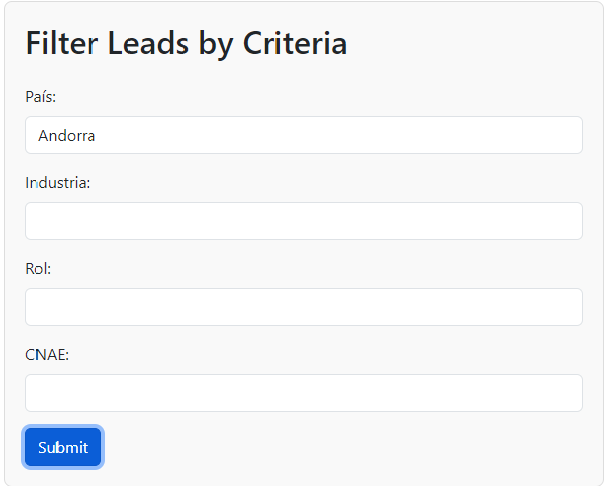

In this simple application, we use GoogleSheets and App Scripts, so we can enter the site
https://leads-automation.netlify.app/,
and select parameters from the panel.

So click submit and a csv file is downloaded.